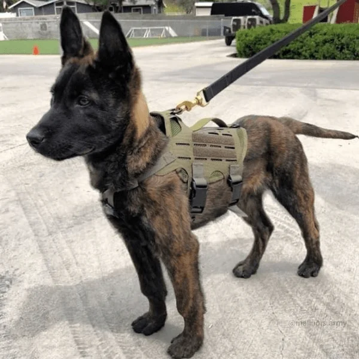
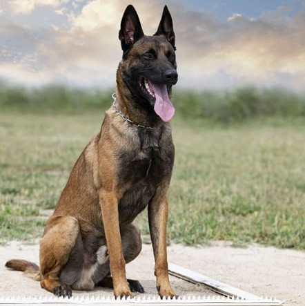

Pastor Belga Malinois


Mi Pastor Belga Malinois es un perro increíblemente ágil e inteligente, heredero de una larga historia como perro de trabajo en Bélgica. Lo he visto crecer rápido, siempre curioso y con una energía inagotable. Su comportamiento es atento y protector, pero también muy cariñoso cuando está en familia. Con buen entrenamiento y ejercicio diario se convierte en un compañero equilibrado y dispuesto a aprender. Para mí, es un amigo leal, trabajador y siempre listo para la acción.